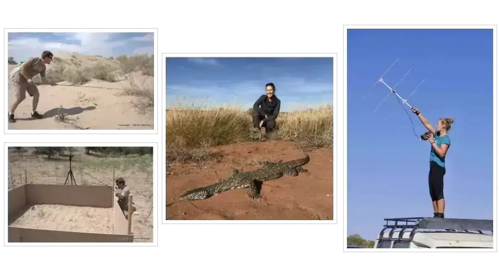

Photos from the field, life in the lab, and visitors
Field sites, group photographs, visiting researchers and moments from life in The Lizard Lab.
Field sites
Around the world with The Lizard Lab
01 / 11
Images from the field
Lab members past and present work at field sites across Australia and around the world, including the Mediterranean, Africa and Asia.
02 / 11
Fieldwork in New South Wales
Yorick Lambreghts and Victoria Russell sampling Egernia in the field for projects on social plasticity and kin recognition.
03 / 11
Lane Cove National Park
One of our field sites for research on the eastern water dragon, Intellagama lesueurii.
04 / 11
Arid-zone fieldwork
Fieldwork at Gluepot, South Australia, on tree skinks and at Australian Wildlife Conservancy’s Newhaven Sanctuary in central Australia on Liopholis kintorei.

05 / 11
More arid-zone fieldwork
Dan Noble catching lizards and conducting experiments in the Tukai Desert, China, and Kari Soennichsen radio-tracking perenties (Varanus giganteus) in the Northern Territory.
06 / 11
Augrabies Falls National Park
Augrabies Falls National Park in north-west South Africa is home to the world-famous Augrabies flat lizard, Platysaurus broadleyi.
07 / 11
Augrabies landscapes
Spectacular views across one of The Lizard Lab’s long-running field sites.
08 / 11
The Orange River
The Orange River is the lifeblood of the Augrabies flat lizards.
09 / 11
Tukai Desert, China
The Tukai Desert in Xinjiang Province, where we worked on several toad-headed agamas, including Phrynocephalus mystaceus.
10 / 11
Fieldwork abroad
A selection of field sites from around the globe: Mozambique, Sri Lanka with Ruchira Somaweera, and China with Yin Qi.
11 / 11
Deserts of Xinjiang Province
Working with Dr Yin Qi on toad-headed agamas in the arid zone of north-west China.
Life in the lab
Visitors and group photographs
Members of the lab in our former lab “house”.Field research with The Lizard Lab.Toad-headed agamas in desert habitat.